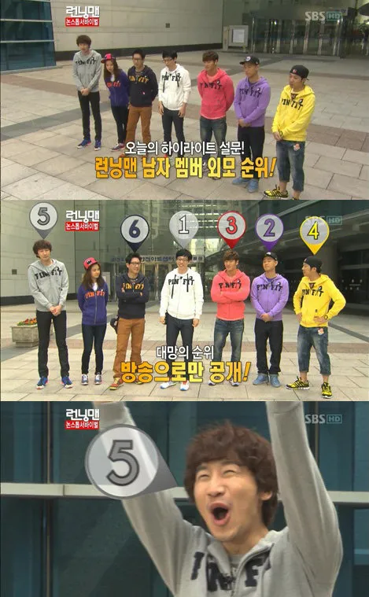
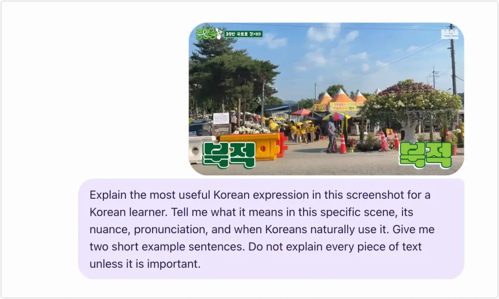
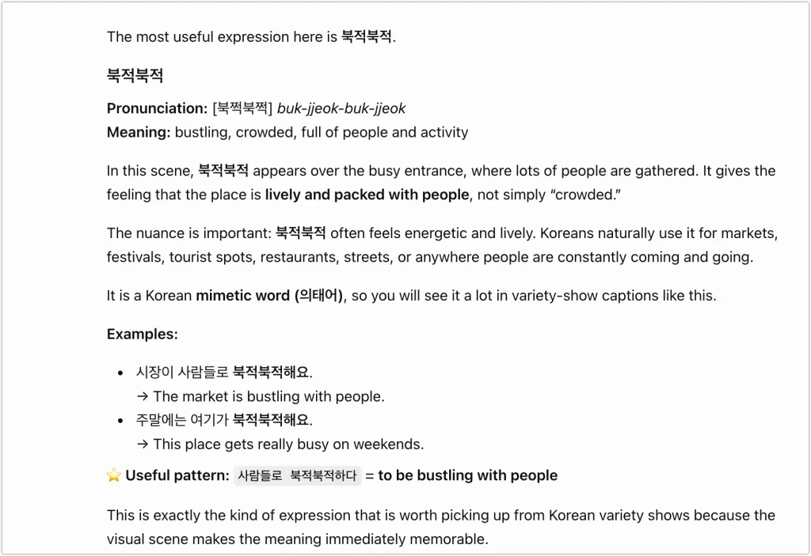
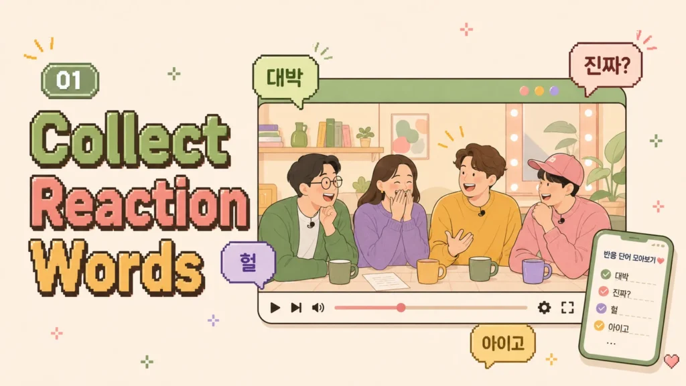
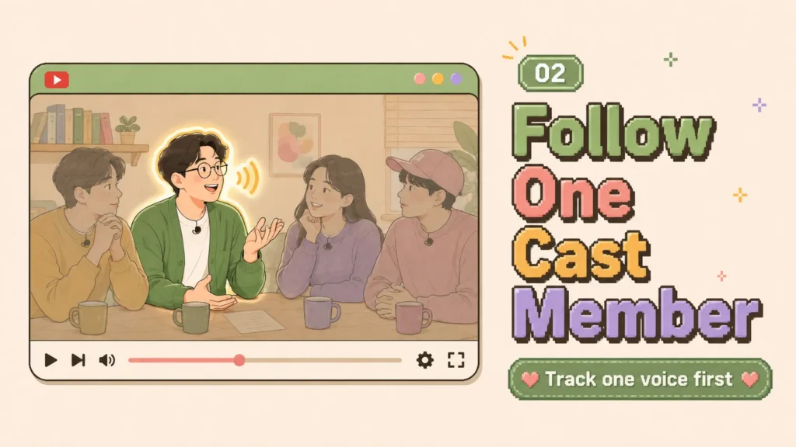
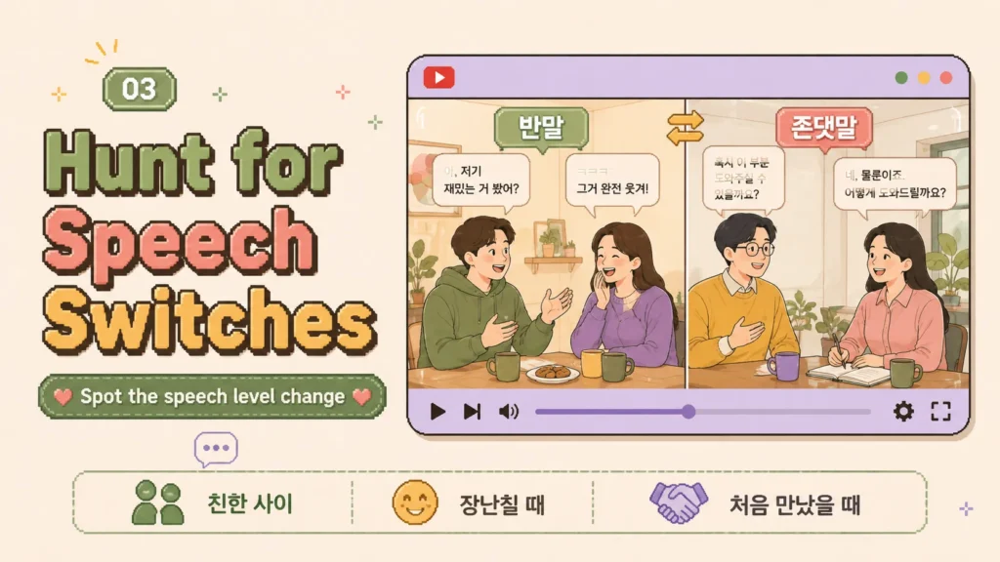
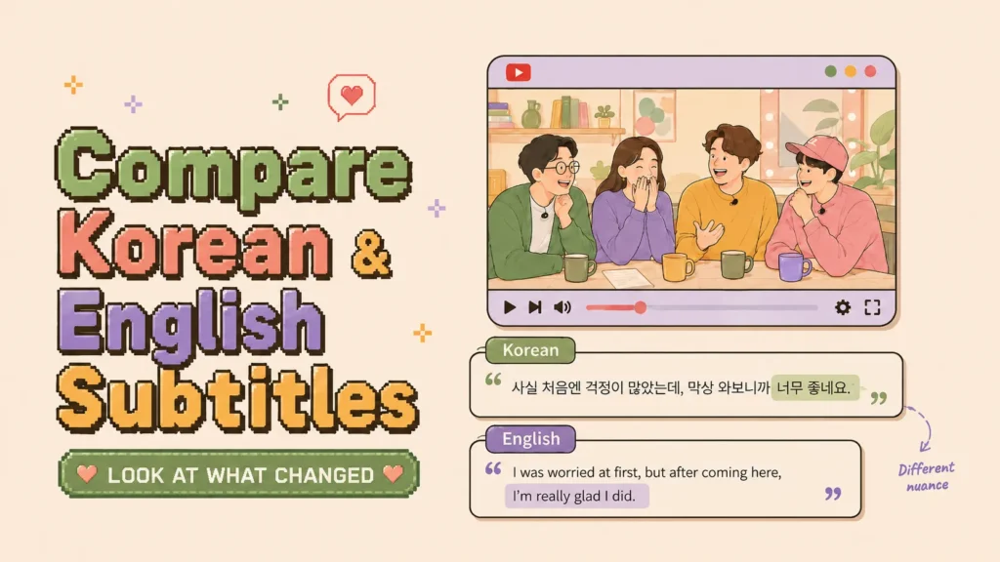

Key Takeaways
- The best Korean variety shows to learn Korean expose you to natural, spontaneous speech that textbooks and scripted dramas rarely capture.
- Beginners should start with shows that have strong visual context or slower, more predictable conversations before moving on to faster shows like Running Man.
- You do not need to study an entire episode. One short clip you genuinely enjoy can give you useful listening practice, vocabulary, and speaking material.
K-dramas helped me get used to hearing Korean, but variety shows were where Korean started to feel much closer to real life.
I have always loved Korean and Japanese variety shows for how inventive and carefully made they feel. The cast usually commits fully to the joke or mission, and the colorful on-screen captions make the whole thing even more fun to watch.
For Korean learners, those captions are useful too. They often highlight key words, reactions, and memorable phrases, while the conversations give you the fillers, banmal, honorific switches, interruptions, and natural speech that textbooks rarely capture.
That is why, if you are looking for the best Korean variety shows to learn Korean, I would not simply choose the most famous ones. I would choose the shows that expose you to a specific type of Korean you actually want to understand.
Quick Picks: Which Korean Variety Show Should You Watch?
| If you want to learn… | Start with |
|---|---|
| Everyday Korean | I Live Alone |
| Simple family Korean | The Return of Superman |
| Food and travel vocabulary | Street Food Fighter |
| Opinion and discussion Korean | Abnormal Summit |
| Korean from different ages and jobs | You Quiz on the Block |
| Younger casual Korean | 차린건 쥐뿔도 없지만 |
| Clear interview-style Korean | Salon Drip 2 |
| Natural conversation between familiar people | Pinggyego |
| Travel and situational Korean | 2 Days & 1 Night |
| Banmal and teasing | Knowing Bros |
| Workplace Korean | Workman |
| Fast reactions and slang | Running Man |
| Listening and dictation | Amazing Saturday |
| Game-based banter | New Journey to the West |
| Advanced humor and cultural references | Infinite Challenge |
What Korean Variety Shows Teach You That K-Dramas Don’t
K-dramas are still excellent Korean learning material. The dialogue is usually cleaner, the story gives you strong context, and individual conversations are easier to follow.
If you are not ready for fast unscripted Korean yet, my guide to the best K-dramas to learn Korean is a better place to start.
Variety shows give you something different.
You hear unfinished sentences, fillers, interruptions, reactions, jokes, and overlapping speech. You also hear speech levels change naturally.
A cast member may speak casually with a close friend, then immediately switch to 존댓말 when talking to an older guest or someone they have just met. That kind of register change can feel abstract in a grammar book. On a variety show, you see exactly why it happens.
You will also hear small expressions such as 진짜, 근데, 약간, 그냥, 아니, and 그러니까 constantly.
These expressions are much easier to remember when you hear them repeatedly in context, which is also one of the methods I use to learn Korean vocabulary without memorizing isolated word lists.
Korean variety shows have another advantage that is easy to overlook: the text on screen.
Editors constantly pull out key words, reactions, punchlines, and memorable phrases in large Korean captions. They are not always word-for-word subtitles, but that can actually help.
Imagine a crowded market appears on screen and the caption says 북적북적. Even before checking a dictionary, the scene gives you a strong clue that the word means something like “bustling” or “crowded with activity.”
That connection between sound + Korean text + visual context makes vocabulary much easier to remember.
The same thing happens with Koreanized English. A word such as 타이틀곡 may look simple once you know it comes from “title” + 곡, but the Korean pronunciation can take time to recognize in real speech.
There is also a benefit to watching the same cast repeatedly.
Once you know how someone usually speaks, their pronunciation, rhythm, favorite expressions, and jokes become easier to predict. Listening starts to feel less like decoding every sentence and more like following a person you already know.
The downside is that natural Korean is messy. Fast, overlapping conversations are one of the hardest parts of Korean variety shows, which is why choosing the right show for your current level matters. My guide on how to improve Korean listening covers practical ways to get more comfortable with natural-speed Korean.
1. I Live Alone (나 혼자 산다)
Best for: Everyday Korean
Level: Beginner to lower-intermediate
If I had to recommend one show for practical daily Korean, it would be I Live Alone.
The format follows celebrities through normal routines. They wake up, cook, clean, exercise, go shopping, meet friends, order food, or spend a quiet day at home.
That makes the vocabulary useful immediately.
You are not trying to understand a complicated fantasy plot or legal investigation. Someone is making breakfast or cleaning an apartment, and you can usually see exactly what they are talking about.
What you can learn: daily routines, food vocabulary, household expressions, hobbies, everyday reactions.
This is one of the first native Korean shows I would try after learner-focused content starts feeling too easy.
2. The Return of Superman (슈퍼맨이 돌아왔다)
Best for: Simple everyday expressions
Level: Beginner
This is one of the friendliest variety shows for learners who still depend heavily on context.
Adults are often speaking to children, so sentences tend to be shorter and key words are repeated. You hear lots of simple questions, commands, food words, body parts, clothes, toys, and emotion vocabulary.
The visual context helps too.
If someone says 먹어 봐 while handing a child food, you can understand much of the situation before checking a dictionary.
What you can learn: family vocabulary, basic verbs, simple questions, short commands, daily spoken Korean.
One small warning: children do not always pronounce words like adults, so I would choose adult speakers when doing shadowing practice.
3. Street Food Fighter (스트리트 푸드 파이터)
Best for: Food Korean and clear explanations
Level: Beginner to intermediate
This is a good choice if fast cast-based variety shows still feel overwhelming.
Baek Jong-won travels and talks about food, ingredients, restaurants, and local eating culture. Because each segment stays on one topic, related vocabulary appears together rather than randomly.
The speaking style is also more controlled than a chaotic game show.
What you can learn: food vocabulary, taste expressions, ingredients, restaurant Korean, travel vocabulary.
If you are interested in food, this is an easy way to build a useful vocabulary cluster without feeling like you are memorizing a list.
4. Abnormal Summit (비정상회담)
Best for: Opinions and discussion Korean
Level: Intermediate
This is one of the most interesting older shows for learners who want to move beyond basic conversation.
The format centers on discussions about society, culture, relationships, habits, and other broad topics. Many panelists are foreigners speaking Korean, which gives learners something unusual: you can hear non-native Korean and native Korean in the same conversation.
There are also moments where pronunciation, vocabulary, or phrasing gets clarified.
More importantly, the show gives you language for expressing an actual opinion.
What you can learn: giving opinions, agreeing and disagreeing, explaining reasons, comparing viewpoints, discussion vocabulary.
If your Korean is good enough for everyday conversation but you struggle to explain what you think, this is a useful next step.
5. You Quiz on the Block (유 퀴즈 온 더 블럭)
Best for: Hearing Korean from different kinds of people
Level: Intermediate
One reason I especially like the earlier episodes of You Quiz on the Block is the street-interview format.
Yoo Jae-suk and Jo Se-ho would meet ordinary people and simply start talking to them.
For a Korean learner, that gives you something most variety shows cannot: a wide range of real speakers.
You may hear a student talk about school, an office worker explain a job, an older person tell a story from the past, or someone describe an ordinary part of daily life.
The vocabulary changes with every person, but so does the speaking style.
The hosts also use plenty of polite Korean with strangers. Guests may begin more formally, then relax as the conversation continues.
Newer episodes feature more celebrities, but I still find the earlier street-interview format especially valuable for language learning.
What you can learn: 존댓말, occupations, storytelling, everyday conversation, more formal explanations, different speaking styles.
Listening game: Notice when the host keeps the conversation polite and when the guest begins to relax into a more casual style.
6. 차린건 쥐뿔도 없지만
Best for: Younger conversational Korean
Level: Intermediate
If you watch a lot of idol or celebrity content, this is a great bridge into more natural Korean.
The atmosphere is casual, the topics jump around, and the conversation feels young and spontaneous. Lee Youngji has a very energetic speaking style, so there are plenty of reactions, jokes, and modern conversational expressions.
Compared with a traditional interview, the guests often feel much less formal.
That makes the show particularly useful if you want to get used to how younger Koreans actually chat.
What you can learn: younger casual speech, reactions, slang, conversational rhythm, Gen Z expressions.
You do not need to understand every joke. Pay attention to expressions that keep appearing across different guests.
7. Salon Drip 2 (살롱드립2)
Best for: Clear conversational Korean
Level: Intermediate
This is one of my favorite choices for learners who want natural speech without too much chaos.
Jang Doyeon speaks clearly and controls the flow of the conversation well. Many episodes are built around a host-and-guest exchange, so it is much easier to follow who is speaking than in a crowded game show.
The speaking speed is also often manageable.
You still get jokes, personality, and spontaneous answers, but the structure gives your ears more time to keep up.
What you can learn: interview questions, clear answers, transitions, storytelling, witty everyday conversation.
If Pinggyego still feels too loose, I would try Salon Drip 2 first.
8. Pinggyego (핑계고)
Best for: Natural Korean conversation
Level: Upper-intermediate
If I had to pick one show for learning how Korean conversations actually flow between familiar people, I would choose Pinggyego.
The premise is simple. People sit down and talk.
There is often very little plot to help you, which is exactly what makes it useful.
You hear interruptions, half-finished stories, topic changes, overlapping reactions, and fillers everywhere.
Listen closely to words such as:
근데
아니
약간
그냥
그러니까
뭐랄까
These tiny words are a huge part of spoken Korean, but they are easy to overlook when you study from a textbook.
What you can learn: fillers, banmal, storytelling, interruptions, topic changes, natural conversational rhythm.
Try This: Follow One Speaker
Do not try to understand everyone in the room.
Pick one person you like and focus only on their speech for part of the episode.
After a few episodes, you will start getting used to that person’s voice, favorite fillers, pronunciation, and sentence endings.
You do not need to understand the room. Understand one person first.
9. 2 Days & 1 Night (1박 2일)
Best for: Travel and situational Korean
Level: Intermediate
Few long-running shows give you this many practical situations.
The cast travels around Korea, eats regional food, completes missions, meets local residents, asks questions, negotiates, complains, and reacts to whatever goes wrong.
You hear vocabulary related to transport, weather, food, directions, accommodation, games, and local culture.
It is also useful for speech levels.
Cast members may use banmal with each other, then switch to polite Korean when talking to older people or strangers.
What you can learn: travel Korean, food vocabulary, instructions, regional culture, reactions, honorific switching.
Listening Game: Catch the Register Switch
Listen for the exact moment someone moves from casual speech with another cast member to 존댓말 with a local resident.
Then ask yourself why.
Was it age? Distance? Respect? The fact that they had just met?
That question turns passive listening into something much more useful.
10. Knowing Bros (아는 형님)
Best for: Banmal and teasing
Level: Intermediate
Knowing Bros is especially useful if you want to get better at recognizing informal Korean.
The classroom concept puts the cast and guests in a deliberately casual setting. That leads to lots of banmal, teasing, playful insults, jokes, and casual sentence endings.
It is entertaining input, but there is an important catch.
The social rules inside the show are not the same as everyday Korean society.
Do not assume that because a guest speaks in banmal on Knowing Bros, you should copy that register with people you have just met.
What you can learn: banmal, casual endings, slang, teasing, playful conversation.
Listening Game: Would They Say This Outside the Show?
When a guest uses banmal, ask yourself whether the same person would use it if they were meeting the cast for the first time in a normal setting.
That makes speech levels much easier to understand than memorizing a list of rules.
11. Workman (워크맨)
Best for: Workplace Korean
Level: Intermediate
Workman is one of the easiest shows on this list to turn into topic-based vocabulary study.
Each episode focuses on a different job or workplace.
That means one episode may give you restaurant vocabulary, another customer-service language, and another words related to delivery, entertainment, retail, or manual work.
Because you see the job happening on screen, new vocabulary has a clear context.
What you can learn: occupations, workplace instructions, customer service Korean, practical verbs, casual work banter.
If you like organizing vocabulary by topic, this show works especially well.
12. Running Man (런닝맨)

Best for: Fast reactions and slang
Level: Upper-intermediate
Running Man is a classic Korean variety show, but I would not recommend starting here as a beginner.
The language can get chaotic.
Several people speak at once. Members shout during games, interrupt each other, use nicknames, reference old jokes, and react very quickly.
Once you reach intermediate Korean, though, that chaos becomes useful listening practice.
The long-running cast also gives you an advantage. After enough episodes, you begin to recognize how individual members speak, joke, and react.
What you can learn: slang, reactions, game instructions, banmal, arguments, fast conversational Korean.
If you can follow most of a Running Man conversation without constantly reading subtitles, your listening has already come a long way.
13. Amazing Saturday (놀라운 토요일)
Best for: Listening and dictation
Level: Upper-intermediate
This may be the show with the clearest built-in language exercise.
A major part of the program involves listening to song lyrics and trying to figure out exactly what was sung.
That is essentially Korean dictation practice disguised as entertainment.
Lyrics can be difficult because sounds blend together, pronunciation shifts, and music makes word boundaries harder to hear.
That is exactly why the exercise works.
What you can learn: sound discrimination, connected speech, pronunciation changes, spelling, lyrics vocabulary.
Try This
Pause before the answer appears.
Write what you think you heard.
Then compare your version with the Korean on screen.
Do not worry about getting the whole line right. Even catching one word you previously missed is progress.
14. New Journey to the West (신서유기)
Best for: Game-based banter and Korean humor
Level: Advanced
This is where the listening gets much harder.
The cast knows each other well, so conversations are packed with interruptions, teasing, callbacks, games, wordplay, and references to earlier episodes.
That makes the show very funny once you understand the group dynamic.
It also makes it difficult if you are still translating sentence by sentence.
What you can learn: fast banter, playful insults, game vocabulary, Korean humor, pop-culture references.
The games are particularly useful because the same short expressions often repeat many times.
15. Infinite Challenge (무한도전)
Best for: Advanced listening and Korean cultural references
Level: Advanced
Infinite Challenge ended in 2018, so this is the one clearly archival recommendation on the list.
I am still including it because of how influential it has been in Korean variety culture.
The language is not easy.
There are fast exchanges, sarcasm, older slang, cultural references, inside jokes, and humor that often depends on knowing the relationships between cast members.
For advanced learners, that difficulty is exactly what makes it valuable.
What you can learn: sarcasm, comedy, cultural references, older slang, extremely fast banter.
If you can comfortably follow Infinite Challenge without subtitles, Korean variety shows probably are not your biggest listening problem anymore.
How I Actually Learn Korean With Variety Shows
I do not want watching a variety show to feel like homework.
The point is to enjoy the show first, then use the moments that naturally catch your attention.
Here is the method I would actually use.
1. Watch for Fun First
Watch the episode normally.
Use subtitles if you need them. Follow the guests. Laugh at the jokes. Do not pause every twenty seconds because you saw a new word.
You need the story and context first.
2. Go Back Only When a Clip Makes You Want To
Choose a short scene you genuinely liked.
Maybe someone said something funny. Maybe a reaction sounded useful. Maybe you understood almost everything except one small phrase.
Thirty to ninety seconds is enough.
3. Use the Korean Text on Screen as Clues
Watch the clip again and look at the Korean captions.
Do not translate every sentence.
Use the visual context, facial expressions, and screen text to make a guess first.
If you see 북적북적 over a crowded street or market, you can already infer much of the meaning from the scene.
Guess first. Confirm later.
That is much closer to real listening than checking a dictionary before your brain has had a chance to work.
4. Take a Screenshot and Ask AI
This is one of the easiest ways to turn a variety-show moment into a tiny Korean lesson.
When an on-screen expression catches your attention, take a screenshot and upload it to ChatGPT or another AI tool.
You can use this prompt:

Explain the most useful Korean expression in this screenshot for a Korean learner. Tell me what it means in this specific scene, its nuance, pronunciation, and when Koreans naturally use it. Give me two short example sentences. Do not explain every piece of text unless it is important.
The important part is in this specific scene.

You want to understand what the expression is doing in context, not get a dictionary entry.
5. Steal One Line and Use It Today
This is the small output step I find most useful.
After watching, choose one sentence you could actually imagine saying yourself.
Do not memorize ten.
Suppose you keep hearing:
약간 그런 느낌이에요.
Find one situation where you can use it later that day.
Send it in a language exchange message. Put it in a journal entry. Say it to yourself.
One sentence that becomes part of your Korean is worth more than twenty words sitting in a notebook.
6. Listen Again Later
Come back to the same clip later that day or the next day.
Try it without English subtitles.
You may suddenly hear a phrase that completely disappeared the first time.
That is one of the most satisfying parts of learning through shows. Something that sounded like noise yesterday starts sounding like Korean today.
Make It More Fun: 3 Variety-Show Learning Games
You do not need to do all of these every time. Pick whichever sounds fun.
Collect Reaction Words

Variety shows are packed with reactions:
대박
진짜?
헐
아이고
맞아
아니
약간
그러니까
Instead of keeping a huge vocabulary notebook, make one small note on your phone just for reactions and fillers.
Add a new one when you notice it repeatedly.
Do not rush to translate every word. Tone, facial expression, and context often tell you what the expression is doing.
This is one area where variety shows are especially useful because the density of reaction language is so high.
Follow One Cast Member

When everyone starts speaking at once, stop trying to understand everyone.
Choose one cast member you like.
Follow only that person for a while.
Every speaker has habits. They have favorite words, a certain rhythm, typical sentence endings, and a predictable way of reacting.
The longer you listen to one person, the easier that person becomes.
Then add another speaker.
This is why you may understand the members of one group or one variety-show cast much better than equally fluent speakers you have never heard before.
Your Korean did not suddenly get worse. Your ear simply has not adapted to the new speaker yet.
Hunt for Banmal and 존댓말 Switches

Instead of asking, “Do I understand this whole conversation?” give yourself a smaller question:
When did the speech level change?
Watch for the moment someone switches from 반말 to 존댓말, or the other way around.
Then ask why.
Age? Familiarity? Social role? A joke? A first meeting?
This is especially useful with shows such as 2 Days & 1 Night, Knowing Bros, and You Quiz on the Block.
You start seeing Korean politeness as something people constantly negotiate in conversation rather than a grammar rule you memorized once.
For Intermediate Learners: Compare Korean and English Subtitles

Once your Korean gets stronger, try comparing the Korean and English subtitles for the same short scene.
Do not look for a perfect one-to-one translation.
Look at what changed.
A joke may have been rewritten. A sentence ending may disappear. A respectful expression may simply become “yes” in English. A slang phrase may be translated by meaning rather than wording.
That gap is useful.
It shows you which parts of the Korean carry tone, relationship, humor, or cultural meaning that cannot be transferred directly.
Talk-heavy shows such as Pinggyego, Knowing Bros, and You Quiz on the Block work particularly well for this.
Where Can You Watch Korean Variety Shows?
Availability changes by country, so I would not choose a show only because one platform currently carries it.
For current TV variety shows, check services such as Rakuten Viki, KOCOWA, Netflix, and the broadcaster’s official website or YouTube channel.
Web variety shows are often much easier to access internationally. Shows such as Pinggyego, Salon Drip 2, Workman, and 차린건 쥐뿔도 없지만 can usually be found through their official YouTube channels.
Older programs such as Infinite Challenge may be easier to find through official broadcaster archives and clips rather than a current streaming catalog.
If Korean subtitles matter to you, check the subtitle options before starting a paid subscription. Availability can vary by platform and region.
Which Korean Variety Show Should You Start With?
If you are still early in your listening journey, start with The Return of Superman or I Live Alone.
If you want clear conversation with enough structure to follow, try You Quiz on the Block or Salon Drip 2.
Once those feel comfortable, move into more spontaneous conversation with Pinggyego or 차린건 쥐뿔도 없지만.
For faster listening, try Running Man.
For a focused listening challenge, use Amazing Saturday.
And if you want to test how well you understand Korean humor, relationships, and cultural references, New Journey to the West and Infinite Challenge are waiting for you.
The goal is not to understand every sentence.
Choose a show you genuinely enjoy, stay with the same cast long enough for their voices to become familiar, and only turn the moments that interest you into study material.
If studying starts making the show less fun, just watch it.
Consistent exposure to Korean you actually enjoy still counts.
Best Korean Variety Shows to Learn Korean FAQs
Can beginners learn Korean from variety shows?
Yes, but beginners should choose carefully.
Shows with strong visual context and everyday situations are much easier to use than fast game shows. The Return of Superman and I Live Alone are better starting points than Running Man.
Variety shows work best as a supplement once you already understand basic Korean pronunciation, vocabulary, and grammar.
Is Running Man good for learning Korean?
Yes, especially for upper-intermediate learners.
You hear slang, banmal, reactions, arguments, commands, and very fast conversational Korean.
The main challenge is overlapping speech. If full episodes feel overwhelming, pick one cast member or one short clip instead of trying to understand everyone.
Which Korean variety show is best for everyday Korean?
For daily routines and practical vocabulary, I would choose I Live Alone.
For everyday conversation between familiar adults, I would choose Pinggyego.
They teach different things. One gives you practical daily-life vocabulary. The other helps you follow spontaneous conversation.
Are Korean variety shows better than K-dramas for learning Korean?
They are useful for different goals.
K-dramas usually have cleaner dialogue and stronger story context, so they are easier for early learners.
Variety shows expose you to spontaneous speech, interruptions, fillers, banmal, reactions, and frequent register changes.
I would use both.
Which Korean variety show is best for learning slang?
For casual expressions and reactions, Running Man and Knowing Bros are both useful.
If you want younger, more current conversational Korean, 차린건 쥐뿔도 없지만 is a stronger choice.
Just remember that slang and banmal are highly context-dependent. Understanding an expression does not automatically mean it is appropriate to use with everyone.
Should I watch Korean variety shows with English or Korean subtitles?
Use both for different purposes.
English subtitles are useful when you first want to understand the situation.
For focused study, replay a short clip with Korean subtitles or on-screen Korean captions. Then listen once more without subtitles.
That final no-subtitle listen is often where you notice how much more you can hear.